1. Core ideas
Five ideas explain almost everything Cradex does. Knowing them makes the rest of the app predictable.
The library is a catalogue, not your music
Cradex keeps a catalogue of your music in a local database: where each file is, its metadata, your decisions, tags, playlists, cues and the analysis results. Your audio files stay where they are. Importing only reads them. Removing a track, deleting a playlist or even emptying the whole library never deletes a file from your disk.
Every value knows where it came from
A track's BPM might come from the file's tag, from a Rekordbox import, from Cradex's analysis, or from you. The details panel shows the source of every value. When sources disagree, the priority is fixed: your own edits win over imports, imports and file tags come next, analysis fills what is left. Re-analysing or re-importing never overwrites a value you typed, and Revert my edits brings back the underlying value.
Nothing changes your files unless you ask
Only four actions write to the disk, and each one asks first and shows a preview: Write tags to files, Rename / move files, Add or remove cover art, and Merge duplicates (which moves extra copies to a trash folder). They are journalled: if something fails or the computer stops halfway, files are put back where the library says they are.
Everything can be undone
Edits, decisions, tags, fixes, imports of metadata, playlist changes, merges and file renames are recorded as undoable steps (Ctrl/⌘+Z). Each track also has its own change history. On top of that the database is backed up every day and before risky operations.
Numbers are measured, suggestions are suggestions
Analysis values are measurements of the signal (tempo, key, loudness, spectrum). AI outputs — genres, styles, moods, similarity, text search — are suggestions: they are never applied to your metadata without your review, and the app tells you how accurate each one was in tests (see Measured).
2. Install, update, remove
Download the installer for your system from the download section. Cradex is free; there is no account to create and no licence key.
macOS
- Choose the right file:
…_aarch64.dmgfor Apple silicon (M1, M2, M3, M4),…_x64.dmgfor Intel Macs. If unsure: Apple menu › About This Mac shows “Chip: Apple M…” or “Processor: Intel”. - Open the
.dmgand drag Cradex into Applications. - The installers are not yet signed by Apple, so the first launch needs one extra step: right-click the app › Open › Open. From then on it opens normally.
- If macOS says the app “is damaged” or still refuses, run this once in Terminal:
xattr -dr com.apple.quarantine "/Applications/Cradex.app"
The Intel build includes every feature except the local AI models, because ONNX Runtime (the engine that runs them) does not provide Intel Mac binaries. Signal analysis (BPM, key, loudness…) works on both.
Windows 10 and 11
- Run
Cradex_…_x64-setup.exe. The.msipackage installs the same app and is meant for managed installations. - SmartScreen shows “Windows protected your PC” because the installer is not code-signed yet: click More info › Run anyway.
- The installer adds Microsoft WebView2 if your system does not have it.
Linux
Cradex needs a 64-bit distribution with glibc 2.38 or newer: Ubuntu 24.04, Debian 13, Fedora 40, or later releases.
Debian / Ubuntu and derivatives — the package pulls in the audio plugins it needs:
sudo apt install ./Cradex_*_amd64.debAny distribution — the AppImage is self-contained:
chmod +x Cradex_*_amd64.AppImage
./Cradex_*_amd64.AppImageCheck your download (optional)
Every release has a SHA256SUMS.txt file listing the fingerprint of each installer. Compute the fingerprint of the file you downloaded and compare:
| macOS | shasum -a 256 Cradex_0.2.1_aarch64.dmg |
|---|---|
| Linux | sha256sum -c SHA256SUMS.txt --ignore-missing |
| Windows | Get-FileHash .\Cradex_0.2.1_x64-setup.exe (PowerShell) |
Updating
Install the new version over the old one. Your library is kept: it lives in your user data folder, not inside the app. When a new version changes the database structure, Cradex first saves a copy of the old database next to it (library.db.pre-vN.bak), then upgrades.
Uninstalling
Remove the app like any other (drag to the Bin on macOS, Settings › Apps on Windows, sudo apt remove cradex on Debian/Ubuntu). Your library folder is left in place so a reinstall finds it again; delete it by hand to remove everything (see where your library lives). Your music is never inside it.
3. Your first hour
A practical path from an empty app to a first sorted playlist in your DJ software.
Step 1 — Bring your music in
Choose one of these, or several:

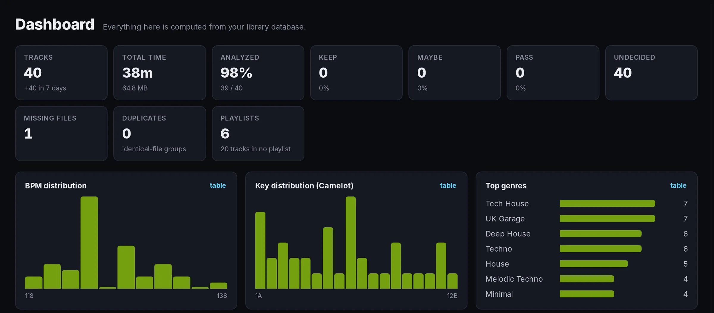
- A folder of music: Library › Import folder…, or drag folders onto the window. Subfolders are included. Formats: MP3, WAV, AIFF, FLAC, ALAC and AAC (M4A), OGG. A summary shows how many tracks were added, updated, unchanged, relinked or failed.
- Your Rekordbox collection: in Rekordbox, File › Export Collection in xml format; then Dashboard or Sync & Export › Import Rekordbox XML…. Tracks, BPM, key, ratings, comments, beatgrids, cues, loops and playlists come in.
- Traktor, Serato or VirtualDJ: Sync & Export › Import, choosing the collection file or folder (details in chapter 19).
- A playlist file: Sync & Export › Import M3U/M3U8 playlist… imports the files it lists and recreates the playlist in the same order.
Importing again later is incremental: unchanged files are skipped, changed ones updated, and files you moved on disk are recognised by their content and relinked to their existing track (with decisions, tags and cues intact).
Step 2 — Decide how genres are suggested
Before the first analysis, Cradex asks once how it should suggest genres:

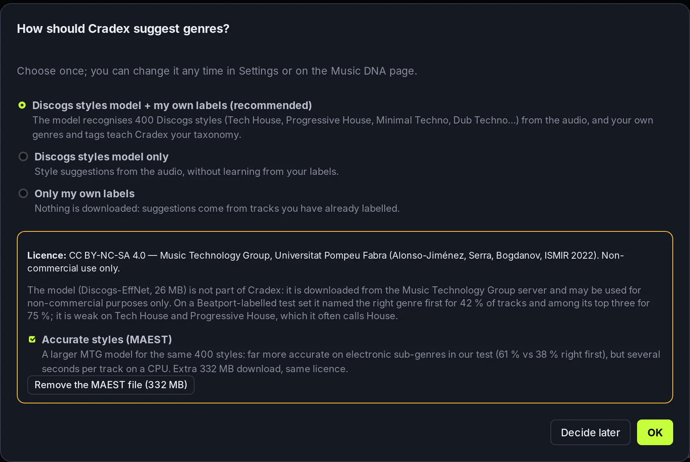
- Discogs styles model + my own labels (recommended): downloads a small model (26 MB) that recognises 400 Discogs styles, and also learns from the genres and tags you set yourself.
- Discogs styles model only.
- Only my own labels: nothing is downloaded.
The Discogs models have a non-commercial licence, shown before download. You can change your choice any time in Settings › Genre suggestions › Change… (more in chapter 14).
Step 3 — Let the analysis run
New tracks are analysed in the background. Open Analysis Queue to follow progress. Each track gets tempo, beat phase, key, loudness, spectral measurements, an energy curve, a waveform, an acoustic fingerprint and, if enabled, the AI model outputs. You can keep working meanwhile; closing the app is safe, the queue resumes at the next start. Choose how hard the computer works in Settings › Analysis profile.
Step 4 — Triage new music
- In Library, search
decision:noneto see tracks you have not judged yet, and sort by date added. - Tick Auto-advance above the table.
- Select the first track and press Enter: it plays from its hot region, the most energetic 30 seconds.
- Press K (keep), M (maybe) or P (pass). With auto-advance on, the next track starts playing immediately.
- Add ratings with 1–5 and Quick Tags with Shift+1–9 as you go.
Step 5 — Build a first playlist and export it
- Search, for example,
decision:keep bpm:122-128 key:8A+to find kept tracks compatible with 8A. - Select them (Ctrl/⌘+A selects every match, however many) and right-click › New playlist from selection….
- Sync & Export › choose the playlist in “What to export” › Export Rekordbox XML, then load the file in Rekordbox (chapter 19).
4. The interface

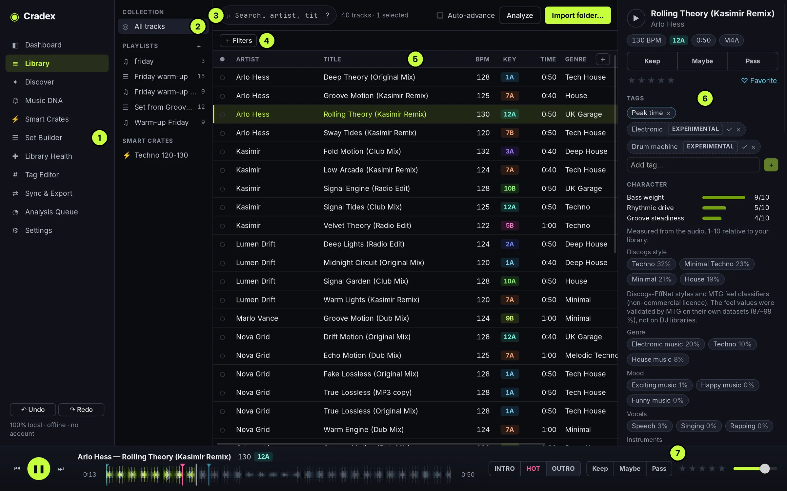
- Pages — every part of the app; Undo / Redo at the bottom.
- Collection — All tracks, playlists, sets, folders and Smart Crates.
- Search — type words, a BPM, a key or a year.
- ＋ Filters — add filters as bubbles, no syntax needed.
- Track table — click a header to sort; the + at its right end adds columns.
- Details panel — the selected track, or bulk editing for a selection.
- Player — waveform, Intro / HOT / Outro, Keep / Maybe / Pass, rating, volume.
Notifications appear at the bottom right: results of imports, analysis, automatic imports from watch folders, and problems (for example a watched folder that cannot be read).
| Page | What it is for | Chapter |
|---|---|---|
| Dashboard | Library statistics computed from your database: totals, distributions of BPM, key, loudness, genres and formats, growth over time, and “gaps to fill” (tracks without genre, BPM, key, artwork, rating, or with failed analysis). Click any bar or gap to see the tracks. | — |
| Library | Browse, search, preview, decide, edit, tag and organise. | 5 |
| Discover | Similar tracks, search by description, map of the library. | 15 |
| Music DNA | Relative energy, character, AI model, genre and tag suggestions, automatic groups. | 13 |
| Smart Crates | Rule-based collections that update themselves. | 8 |
| Set Builder | Order sets by energy and harmony, chapters, next-track suggestions. | 16 |
| Library Health | Missing files, duplicates, transcodes, broken playlists, unused files, relocation. | 17 |
| Tag Editor | Your tag vocabulary, synonyms, Quick Tag slots, suggestion review. | 9 |
| Sync & Export | Import and export for DJ software and files; My Tags; field mapping. | 19 |
| Analysis Queue | Analysis progress, errors, profile, pause and retry. | 10 |
| Settings | Preferences, watch folders, relocation, backups, Start over. | 22 |
5. Library in depth
The table
- Columns: the small + at the right end of the column headers adds or removes columns — Decision, Artist, Title, Version, Remixer, Album, Label, Genre, Subgenre, My Tags, Year, BPM, Key, Time, Rating, Energy, Favourite, Cues, LUFS, Format, kbps, Analysis, Added, Comment, Path. Click a header to sort, click again to reverse.
- Speed: the table only loads the rows you can see, so libraries of 100,000+ tracks scroll smoothly.
- Selection: click selects one track; Ctrl/⌘+click adds or removes; Shift+click selects a range; Ctrl/⌘+A selects every track matching the current search. Ranges and select-all include tracks you have not scrolled to.
- Drag a selection onto a playlist in the left column to add it.
- Double-click or Enter previews a track.

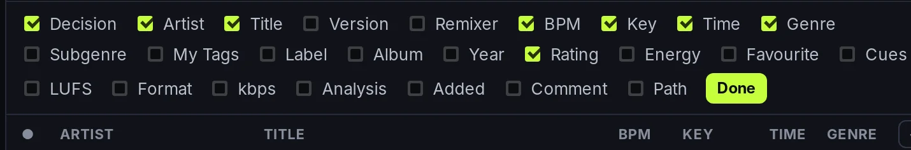
The context menu (right-click)
Actions on the selected tracks:

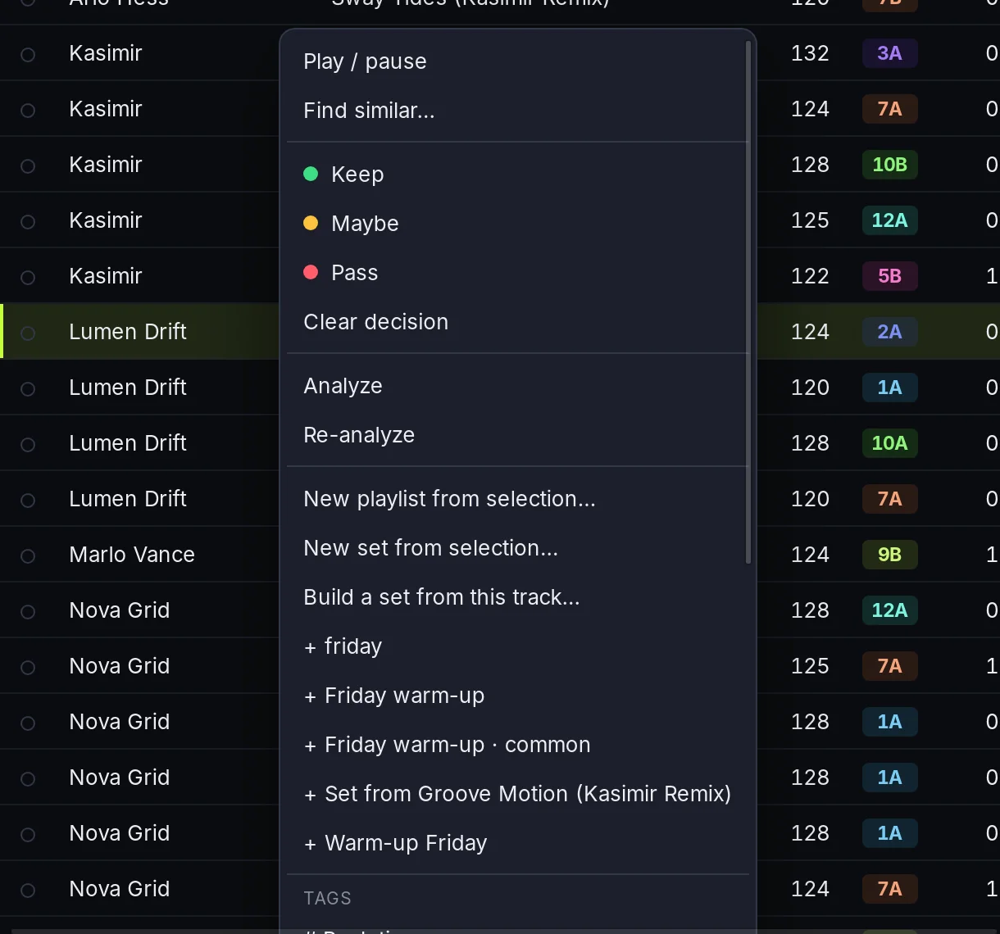
- Keep / Maybe / Pass, ratings, favourite, analyse or re-analyse.
- New playlist from selection…, add to playlist, remove from this playlist, New set from selection….
- Find similar… (opens Discover), Build a set from this track….
- New tag for selection…, Apply cue template….
- Find & replace…, Auto-tag online…, Rename / move files…, Write tags to files…, Rewrite key notation in files…, Add / Remove cover art….
- Archive (hide) and Restore from archive.
The details panel
With one track selected, the panel shows, top to bottom:

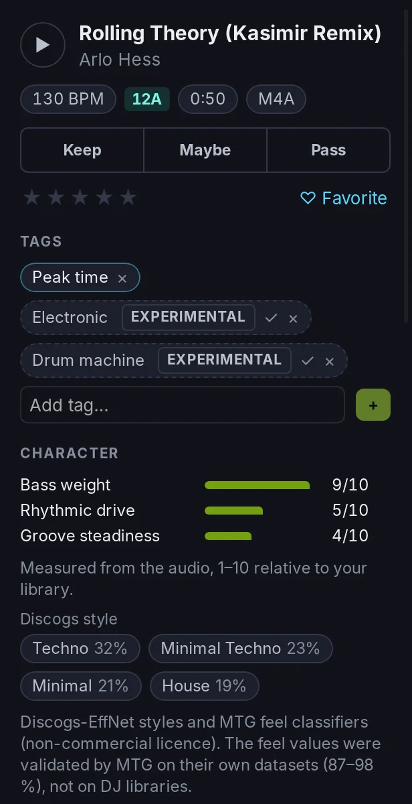

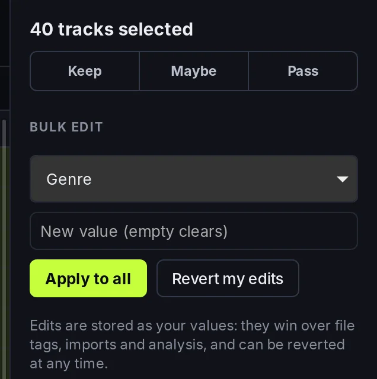
- Header: play button, title and artist, BPM, key, duration, format; Keep / Maybe / Pass; stars; favourite.
- Tags: add and remove; experimental (AI-suggested) tags are marked.
- In playlists: every playlist and set containing the track.
- Character: bass weight, rhythmic drive and groove steadiness on a 1–10 scale relative to your library (measured), plus Discogs styles, feel, emotion and model labels when available.
- Metadata: every field, editable in place, with its source (file, import, analysis, you).
- Notes: free text, searchable.
- Context decisions: a track can be a Keep for one context (e.g. a residency) and a Pass for another.
- Cue points and Beatgrid (chapter 11).
- Measured analysis: every measurement with an explanation (chapter 10).
- File: path, date added, and a warning if the file is missing.
- Change history: every change to this track, with undo.
With several tracks selected, the panel switches to Bulk edit: choose a field, type a value (empty clears it) and apply to all. Revert my edits removes your values and shows the underlying ones again.
Playlists, sets and folders
- Create with the + next to Playlists, or from a selection.
- Reorder tracks in a manual playlist or set with Alt+↑/↓, or in Set Builder.
- Playlist menu (right-click a playlist): Rename, Duplicate, Shuffle (undoable), Merge with… (new playlist with all tracks of several playlists, no repeats), Tracks in common with…, Remove tracks found in…, Add a prefix to the name… (e.g. “2026 · ”), Delete. The set operations always create a new playlist and never change the originals.
- Deleting a playlist keeps its tracks in the library.
Archive
Archiving hides tracks from every view without deleting anything — useful for music you never want to see again but are not ready to delete. Search archived:yes to see them; Restore from archive brings them back. Copies removed by a duplicate merge are archived the same way.
6. Triage & keyboard shortcuts
Triage is how you go through new music quickly. Cradex measures where each track is most energetic (the hot region) so a preview starts where the track tells you most, not on a 32-bar intro.
On macOS use ⌘ wherever the tables say Ctrl. Shortcuts are ignored while you are typing in a field; press Esc to leave a field and ↓ from the search box to go to the list.
Library
| Keys | Action |
|---|---|
| ↑ ↓ | Move through the list (Shift extends the selection) |
| Enter | Preview from the hot region |
| Shift+Enter | Preview from the start |
| K · M · P | Keep · Maybe · Pass |
| U | Clear the decision |
| 1–5 · 0 | Set the rating · clear it |
| Shift+1–9 | Toggle the tag in that Quick Tag slot |
| A | Analyse the selected tracks |
| Alt+↑/↓ | Move the focused track inside a playlist or set |
| Ctrl+F | Jump to the search box |
| Ctrl+A | Select every track matching the search |
| Ctrl+Z | Undo |
| Ctrl+Shift+Z or Ctrl+Y | Redo |
Player
| Keys | Action |
|---|---|
| Space | Play / pause |
| ← → | Seek 10 seconds (30 with Shift) |
| H | Jump to the hot region (start of the most energetic 30 s) |
| I | Jump to the intro (start of the track) |
| O | Jump to the outro (last 32 s) |
| N · B | Next · previous track |
| C | Add a cue point at the playhead |

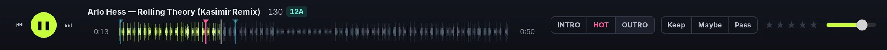
A triage routine that works
- Smart Crate “Inbox” with the rule
decision:none added:14d. - Auto-advance on; Enter on the first track.
- Listen to the hot region; if unsure, I for the intro and O for the outro (mixability).
- K/M/P; Shift+digit for a Quick Tag such as “Warm-up” or “Peak”.
- At the end,
decision:maybegives you a short second round.
Some files cannot be played by the system's audio engine (for example certain ALAC or AIFF variants): Cradex decodes them itself, and the player shows “decoded preview”.
7. Search and filters
You do not need to learn any syntax. In the Library, type words in the search bar and use the ＋ Filters button for everything else.
Filters
＋ Filters opens a list: BPM, Key, Genre, Artist, Label, My tag, Year, Rating, Energy, Length, Decision, Added and Status (not analysed, file missing, no cover, favourites, no genre/key/BPM). Pick one, fill in the small form (a range, a key on the Camelot grid with “+ compatible” or “+ energy moves”, a star count…) and press Apply. The filter appears as a bubble next to the button. Click a bubble to change it, × to remove it, Clear filters to remove all. Tick Exclude these tracks instead to turn a filter around (a red bubble). Filters combine with what you type and are remembered on this computer. Save as Smart Crate turns the current search and filters into a crate that keeps itself up to date.

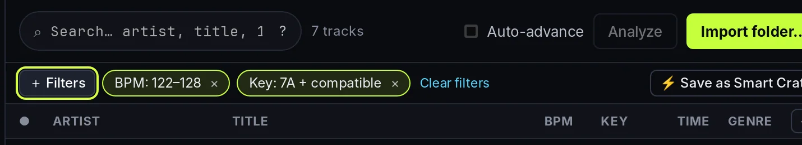

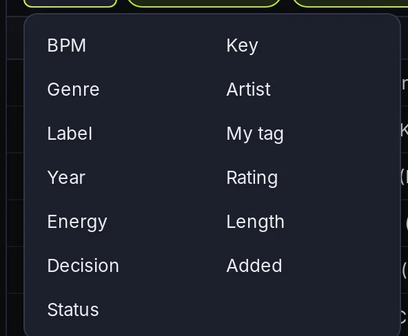

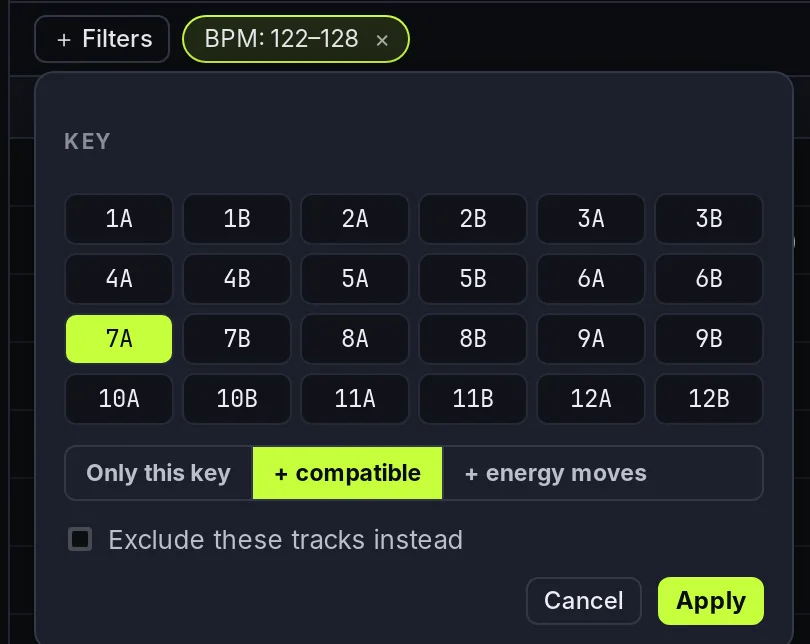
Shortcuts you can type
| Type | Finds |
|---|---|
kerri chandler | Words in title, artist, album, label, genre, comments or file name |
124 | Tracks at 124 BPM, or with “124” in the text |
120-126 124bpm | A BPM range / a tempo |
8A 8A+ 8A++ | That key / also compatible keys / also energy moves |
2019 1990-1999 | A year (or the number in the text) / a range of years |
-word "exact phrase" | Exclude / match a phrase exactly |
Advanced syntax (optional)
Everything the filters do can also be written, which is handy in Smart Crates, Recipes, the scope fields of Discover and Set Builder, Smart Fixes and the command-line tool. Italian field names work too (genere:, anno:, tonalità:, voto:, durata:, energia:). A typo is reported under the search bar rather than silently ignored.
Text
| Write | Finds |
|---|---|
rolling | Words starting with “rolling” in title, artist, version, remixer, album, label, genre, comment, notes or path |
"dub techno" | The exact phrase |
artist:kerri | One field. Fields: artist title album label genre subgenre version remixer comment notes path format |
title:"Original Mix" | A phrase in one field |
genre:none | Tracks where the field is empty (also bpm:none, key:none…) |
Numbers
| Write | Finds |
|---|---|
bpm:124 | Exactly 124 (rounded) |
bpm:122-126 | A range, both ends included |
bpm:>120 bpm:<=100 | Comparisons: > >= < <= |
year:<2000 rating:>=4 duration:>360 | Year, stars, duration in seconds |
lufs:-12--6 | Loudness range in LUFS (note the double minus) |
energy:>7 | Relative energy 1–10 (chapter 13) |
added:7d | Added in the last 7 days |
Keys
| Write | Finds |
|---|---|
key:8A or key:Am | One key, in Camelot or musical notation |
key:8A+ | Keys that mix harmonically with 8A: the same key, the neighbours on the Camelot wheel (7A, 9A) and the relative key (8B) |
key:8A++ | Also the “energy boost” moves: +2 (10A) and +7 (3A) |
States
| Write | Finds |
|---|---|
decision:keep decision:pass decision:maybe decision:none | Triage state |
fav:yes | Favourites |
tag:dark | A tag, including its child tags and synonyms |
missing:yes | Files not found on disk |
analyzed:no | Not analysed yet |
artwork:no | Without embedded cover art |
transcode:yes | Suspected transcodes |
archived:yes | Archived tracks (hidden otherwise) |
Combining
- Terms side by side must all match (AND is implicit):
techno bpm:>130. ORfor alternatives:label:drumcode OR label:kompakt.NOTor a leading minus to exclude:-decision:pass,NOT genre:trance.- Parentheses to group:
(genre:techno OR genre:minimal) bpm:124-128.
Ten useful searches
| Goal | Search |
|---|---|
| New music to judge | decision:none added:30d |
| Next track for an 8A at 124 | key:8A+ bpm:121-127 -decision:pass |
| Peak-time candidates | decision:keep energy:>=8 bpm:>=128 |
| Warm-up material | energy:<=4 bpm:118-124 -decision:pass |
| Tracks that need tags | genre:none OR key:none OR bpm:none |
| Fake lossless files | transcode:yes format:flac |
| Very loud masters | lufs:>-7 |
| Long extended mixes | duration:>420 title:extended |
| Maybes from one label | decision:maybe label:"Dirtybird" |
| Kept, never played in a set | decision:keep fav:yes -tag:played |
8. Smart Crates & Recipes
Smart Crates
A Smart Crate is a saved search that updates itself: add music that matches the rules and it appears in the crate automatically. Create one in Smart Crates › New Smart Crate, give it a name and write the rules in the search language; the number of matching tracks updates as you type. Crates appear in the Library's left column like playlists.

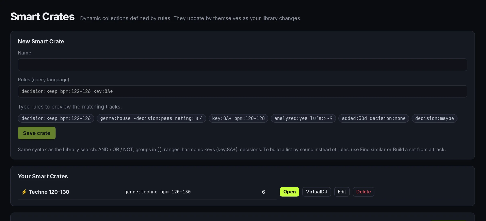
When exported to DJ software, a Smart Crate becomes a playlist of the tracks that match at the moment of export: Rekordbox XML has no smart playlists, and the Traktor and Serato smart-list formats are not documented. For VirtualDJ, Cradex can translate the rule into a VirtualDJ filter: Smart Crates › VirtualDJ copies it, and you paste it into My Lists › Add Filter. Terms without a VirtualDJ equivalent are listed.
Recipes
A Recipe is a search plus actions, run with one click or automatically on newly imported tracks (including those from watch folders). Find them in Library › Recipes. Each run is a single undoable step.
| Action | Example |
|---|---|
| Set field | genre = “Techno” (empty value clears the field) |
| Add tag / Remove tag | +#Inbox |
| Set decision | decision maybe |
| Add to playlist | → To sort |
| Analyse | queue the tracks for analysis |
Example: Applies to genre:none, actions “add tag Inbox” and “add to playlist To sort”, with “Also run on newly imported tracks” ticked. Every new untagged download lands in one place for you to sort.

10. Analysis explained
Analysis decodes each track and measures it on your CPU. Results are versioned: an unchanged file is not analysed twice, and a new analyser version re-analyses only when you ask. Your own BPM and key values are never overwritten.
What each measurement means
| Measurement | Meaning |
|---|---|
| Tempo | Beats per minute from the periodicity of the onset envelope, refined over 16 beats and snapped to the nearest whole BPM when that fits almost as well (most club music is produced at whole tempos; a small error makes beatgrids drift). |
| Periodicity | How strongly the signal repeats at the beat (0–1). A score of the algorithm, not a probability: low values mean a loose or broken beat. |
| First beat | Where the beatgrid starts. |
| Key | From a pitch-class profile compared with learned major and minor key profiles, with the tuning estimated first (tracks not tuned to 440 Hz). |
| Key correlation and Δ | How well the winning key fits and its margin over the runner-up. Low values: ambiguous tonality (atonal, percussive or modulating tracks) — check by ear. |
| Loudness (LUFS) | Integrated loudness, ITU-R BS.1770 / EBU R128 — what streaming services normalise to. Club masters are often between −9 and −6 LUFS. |
| Sample peak | The highest sample level (dBFS). |
| Crest | Peak-to-RMS ratio. Lower values usually mean heavier limiting. |
| Loudness spread | Difference between loud and quiet passages (p95 − p10 of 400 ms blocks): a simple dynamics indicator, not the EBU LRA. |
| Brightness | Mean spectral centroid: higher = more treble. |
| Low end | Share of the energy below 150 Hz. |
| Onset rate | Detected note and percussion onsets per second: busy versus sparse. |
| Bandwidth | Frequency where the spectrum ends abruptly (an encoder's low-pass); “full” when there is no sharp cut-off. Used to flag transcodes. |
| Energy curve | RMS level per second, drawn under the details; used for the hot region, sections and cue anchors. |

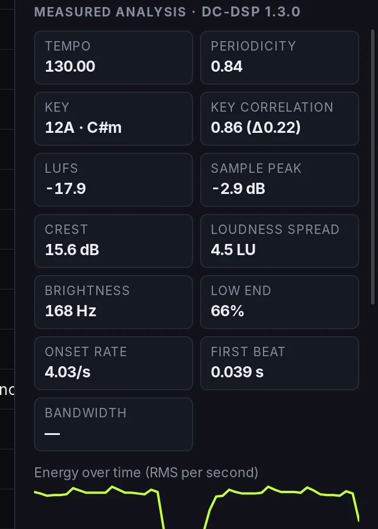
Analysis Queue
- Profile: Light (1 worker), Balanced (half the CPU cores), Maximum (all cores but one). Light keeps the computer quiet while you work; Maximum is fastest for a first import.
- Pause / Resume, Cancel queued, Retry failed, Clear finished.
- Find unanalyzed tracks queues everything that has no analysis yet.
- Failed jobs show the error (for example a damaged file). A file that cannot be decoded does not stop the queue.

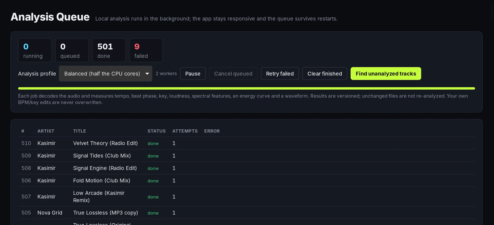
BPM range: half-time and double-time
A drum & bass track at 174 BPM can also be heard at 87; a dubstep track at 140 at 70. Software picks one convention. Settings › BPM range works like Rekordbox and Traktor: the detected tempo is moved into the chosen range by doubling or halving only. Choose 88–175 if you play drum & bass, 70–140 for dubstep, or Automatic (60–200, DJ-style preference). Re-analyse to apply the range to existing tracks; values you typed are kept.
Key notation
Cradex shows keys in Camelot (8A) and accepts musical names (Am). Settings › Key notation written to files chooses what Write tags to files writes: as in the library, Camelot (8A), Open Key (1m) or musical (Am, Db). To convert files you already have, select them › Rewrite key notation in files… (preview, backup copies, verification).
How accurate is it?
On a held-out set of Beatport-labelled tracks, the tempo is within 4 % of the label for 92.5 % of tracks, within 0.05 BPM for 86.9 %, and 98.0 % are right or exactly half/double. Keys reach a MIREX score of 67.5 % on GiantSteps Key (59.3 % exactly right; most other answers are a fifth or the relative key, which still mix). Full protocol: AI_VALIDATION.md. Your ears remain the final judge; correct a value and it stays corrected.
11. Beatgrid, cues, loops
Beatgrid editor
In the details panel, Beatgrid shows the grid over the waveform (zoomed at the playhead). Tools:

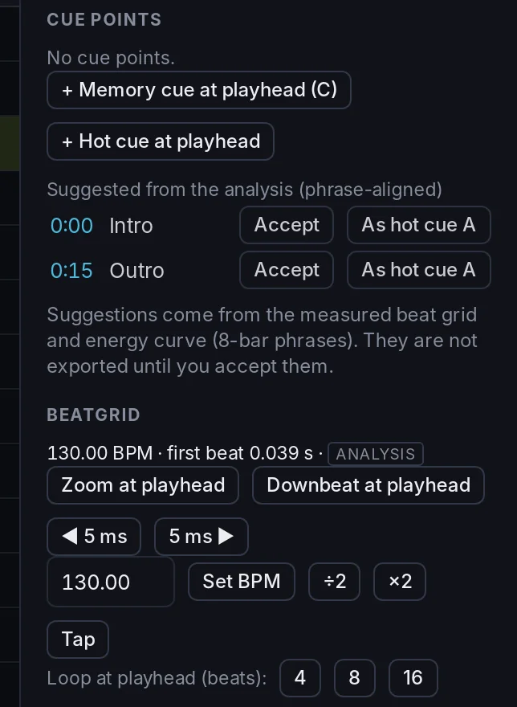
- Downbeat at playhead: play to the first kick of a bar, pause, click — the grid shifts so that beat is a downbeat.
- Move the whole grid: nudge earlier or later in small steps.
- Set BPM: type the exact value.
- Tap: tap along; Use N BPM applies the tapped tempo.
- Back to the analysed grid: removes your edit.
- Loop at playhead: create a loop of 1, 2, 4, 8, 16 or 32 beats snapped to the grid.
Your grid is stored as your value: it wins over imports and re-analysis and is what gets exported.
Cue points
- Memory cue at playhead or C, and Hot cue at playhead (slots A–H).
- Rename cues; cues you confirm are locked (“Confirmed by you: never changed automatically”).
- Suggested cues: from the measured beatgrid and energy curve on 8-bar phrases — Intro, Main, Breakdown, Drop, Outro. They are suggestions: Accept (or accept as a hot cue slot) to keep them. Suggestions are never exported until accepted.
Cue templates
Place the same cues on many tracks at once: select tracks › Apply cue template…. A template is a list of cues, each with:
- Type: hot cue (slot), memory cue, or loop (length in bars).
- Anchor: first beat, Main (first full-energy phrase), Breakdown, Drop, Outro, End of track.
- Offset in bars (e.g. −16 bars before the drop) and a label.
Anchors come from the analysis (sections are found from energy changes on the 8-bar grid), and every cue is snapped to the beatgrid — your edited grid wins. Tracks without analysis or without that anchor are skipped and listed. Option: replace hot cues already in those slots (the old ones are kept as memory cues). One undo removes everything the template created.
12. Compare with other software
Your own collection is the most relevant test of any analyser. After importing a Rekordbox XML (or Traktor, Serato, VirtualDJ), or if your files carry BPM and key tags written by other software (Rekordbox, Mixed In Key…), the Compare panel in Library Health shows how Cradex's values agree:
- BPM: same (±0.05), within ±4 %, half/double, different.
- Key: same, related (a fifth, relative or parallel key), unrelated.
Click a row to find the track and listen. Half/double differences usually come from the tempo convention, not from a wrong beat: set the BPM range to match your other software.
13. Music DNA

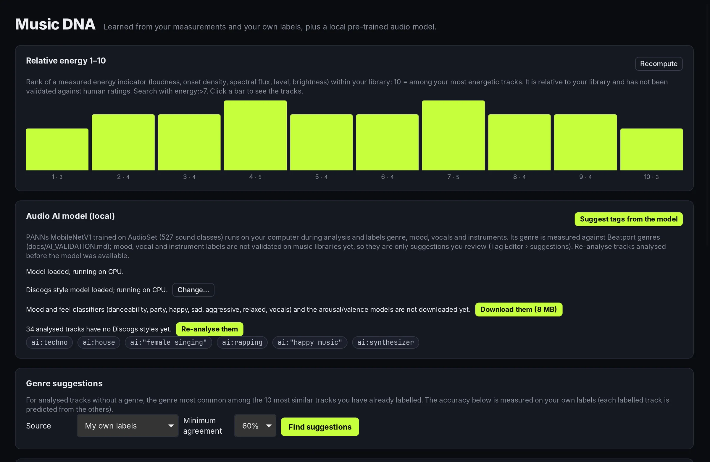
Relative energy 1–10
A rank, within your library, of a measured energy indicator (loudness, onset density, spectral flux, level, brightness): 10 means among your most energetic tracks. It is relative — adding very different music shifts it — and it is not a perceived-energy rating validated by listeners. Use it to sort and search (energy:>7); click a bar to see its tracks; Recompute after big imports.
Character
Three measured scales, 1–10 within your library: bass weight (energy below 150 Hz), rhythmic drive (onsets per second) and groove steadiness (strength of the beat periodicity).
Audio AI model (local)
PANNs, a model trained on AudioSet's 527 sound classes, runs during analysis and labels broad genre, mood, vocals and instruments. Only its genre output was measured against reference labels; the other labels are suggestions you review in the Tag Editor. The page shows whether the model is loaded and on which device (GPU or CPU), how many tracks lack its results, and Suggest tags from the model.
Genre suggestions
For analysed tracks without a genre, Cradex proposes a genre from your own labels (the most common genre among the 10 most similar tracks you have labelled), from the Discogs styles model, or both — the source you chose. Before you apply anything it shows how accurate this has been on your own library: each labelled track is predicted from the others. Minimum agreement trades coverage for accuracy. Review the list and Set genre — one undoable step.
Tag suggestions
For every tag with at least 5 analysed tracks, Cradex proposes other tracks that sound like the tagged ones, with the precision measured on your tags. Suggestions wait for review; rejected ones are never offered again.

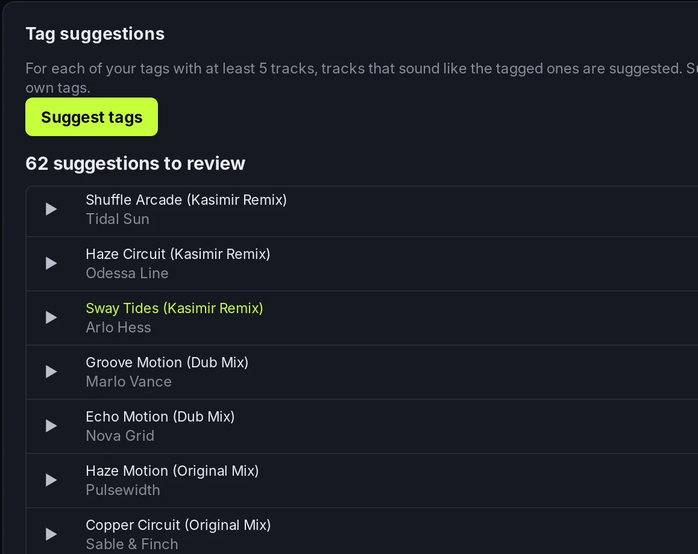
Auto groups
Groups tracks that measure alike (tempo, loudness, brightness, bass, rhythm density, energy shape) and describes each group by what sets it apart — “faster, bass-heavy, busy”, “quieter, dark, deep breakdowns”. Choose the number of groups, then Save as playlist. Useful to discover structure in a large unsorted folder.
14. Optional AI models
All models run on your computer; nothing is uploaded. On Windows they use DirectML and on Apple silicon Core ML when a suitable GPU is available, otherwise the CPU. Every download is checked against a fixed fingerprint before it is used.
| Model | Gives you | Size · licence | How |
|---|---|---|---|
| PANNs | Broad genre, mood, vocals, instruments; “sound” for similar tracks | Included · CC BY 4.0 | Settings › Run the local audio AI model |
| Discogs-EffNet + classifiers | 400 Discogs styles; danceability, party, happy, sad, aggressive, relaxed, vocals, engagement, approachability; arousal and valence; MSD tags | 26 MB + 8 MB · CC BY-NC-SA 4.0 | Genre source dialog (Settings › Genre suggestions › Change…) |
| MAEST (“Accurate styles”) | The same 400 styles, much more accurate on electronic sub-genres (61 % right first versus 38 % in our test); several seconds per track | 332 MB · CC BY-NC-SA 4.0 | Same dialog, tick “Accurate styles (MAEST)” |
| LAION-CLAP | Search by description | ≈ 400 MB · Apache-2.0 | Discover › Describe › Download |
The MTG models (Discogs-EffNet, classifiers, MAEST) are licensed for non-commercial use. Using them for paid work may count as commercial use; the Music Technology Group offers other licences on request. Cradex itself and the PANNs and CLAP models have no such restriction.
After downloading
Models are applied during analysis. Tracks analysed earlier lack their results: the relevant page shows how many and offers to re-analyse them (Music DNA for styles, Discover › Describe for CLAP: Index N tracks). Switching between EffNet and MAEST re-flags tracks so results from different models are never mixed.
Removing a model
Discover › Describe › Remove the model deletes the CLAP files; the genre source dialog has Remove the MAEST file (styles fall back to EffNet). Choosing “Only my own labels” stops using the Discogs models.
What the outputs mean
- Discogs styles are shown per track with their probability. They are suggestions for your genre field, never applied automatically. Weak spots: Tech House and Progressive House are often called House.
- Feel values were validated by MTG on their own datasets, not on DJ libraries: treat them as hints.
- Arousal / valence (emoMusic, 1–9): energy and positivity as rated by listeners in the training data.
15. Discover
Similar tracks

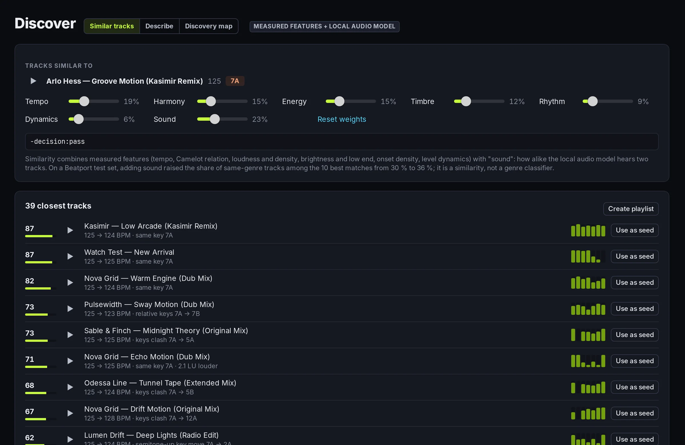
Right-click a track › Find similar…, or play a track and open Discover (Use the playing track). Each result shows a score, the BPM change and the key relation, plus a small bar per dimension. Sliders set how much each dimension counts:
| Dimension | Compares |
|---|---|
| Tempo | BPM distance, half/double time allowed; 6 % apart counts as no match |
| Harmony | Camelot relation of the keys |
| Energy | Loudness, onset density, spectral flux, average level |
| Timbre | Brightness, share of low end and high end |
| Rhythm | Onset density, flux and beat periodicity (a density measure, not a groove model) |
| Dynamics | Loudness spread, level variation, breakdown depth, build-up |
| Sound | How alike the AI model hears the two tracks (Discogs styles when available, otherwise PANNs) |
The scope field limits candidates with a search (default -decision:pass). Use as seed continues from a result; Create playlist saves the seed and the 25 best matches. In tests, adding “sound” raised the share of same-genre tracks among the 10 best matches from 30 % to 36 %: it finds tracks that sound related, which is not the same as the same genre.
Describe — search by description
After downloading the CLAP model and indexing, type what you are looking for in plain English: “warm piano house with female vocals”, “dark rolling techno with a deep bass”, “breakbeat with acid line”. Results are ranked by how well each track's sound matches the words (scores around 0.2–0.35 are normal). Broad descriptions of instruments, voice, mood and energy work best; sub-genre names alone are often confused. Combine with the scope field (bpm:120-128 -decision:pass) for usable shortlists.
Discovery map
Every analysed track as a dot. The two axes are the strongest directions of variation of the measured features (the labels say what drives them, e.g. “brighter / busier”). Drag to pan, scroll to zoom, click a dot to preview, Shift+drag to select an area. Colour by key, decision or BPM; a scope query maps a subset. Selected dots can become a playlist.
16. Set Builder

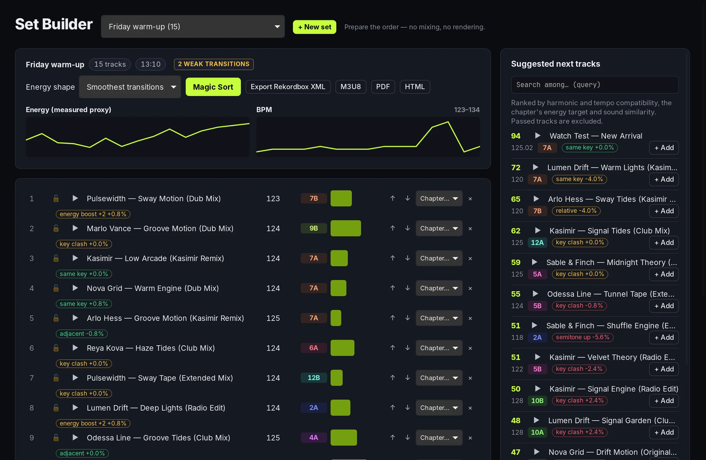
Set Builder prepares the order of a set. It does not mix or render audio.
Creating a set
- New set, or select tracks in the Library › New set from selection….
- Right-click a track › Build a set from this track…: choose a length; Cradex follows the smoothest transitions through your library from that track.
Reading the set
- Energy and BPM curves of the whole set at the top.
- Each row shows the transition from the previous track: key relation (same key, adjacent, relative, energy boost +2, semitone up, key clash) and tempo change. Green = smooth, amber = workable, red = needs care. The header counts weak transitions and unanalysed tracks.
Ordering
- Energy shape: Smoothest transitions, Steady build, or Build, peak, release.
- Magic Sort proposes an order and shows its cost before and after (lower is smoother); undoable.
- Lock (pin) tracks that must keep their position — your opener, a planned peak.
- Move tracks with the arrows or Alt+↑/↓.
Chapters
Split a long set into chapters with roles — Opening, Early warm-up, Building, Late warm-up, Peak time, Closing, or Custom. Each chapter has its own energy target, used by Magic Sort and by suggestions. Chapters can be exported as separate playlists.
Suggestions
The right panel suggests next tracks (after the last track or after a chosen one), ranked by harmonic and tempo compatibility, the chapter's energy target and sound similarity. Passed tracks are excluded; a scope query narrows candidates.
Export
Rekordbox XML, M3U8, PDF (printable running order) or HTML. Set notes are kept with the set.
17. Library Health

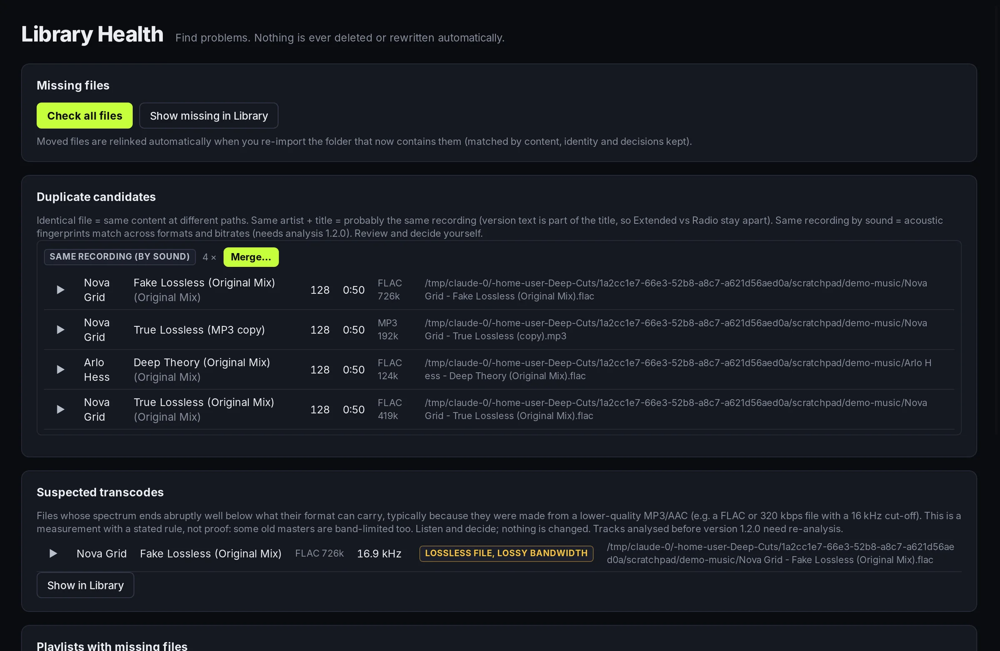
Library Health finds problems. Nothing is ever deleted or rewritten automatically: you review and decide.
Missing files
Check all files verifies that every file still exists. Moved files are relinked automatically when you re-import the folder that now contains them (matched by content, so decisions and cues follow). Moved a whole collection to another drive or computer? Use Relocate library (Settings): replace the start of the stored paths, e.g. D:\Music → /Volumes/USB/Music. The preview shows how many files are found at the new location; only the library changes, files are not moved; undoable.
Duplicates
| Kind | Means | Certainty |
|---|---|---|
| Identical file | The same bytes at different paths | Certain |
| Same artist + title | Probably the same recording (version text is part of the title, so Extended and Radio Edit stay apart) | Check |
| Same recording (by sound) | Acoustic fingerprints match across formats and bitrates | Check by ear |
Merge… lets you pick the copy to keep (Cradex suggests the best quality). Playlists are re-pointed to it; its missing decision, tags, favourite, rating and notes are filled in from the other copies; the other copies are archived and their files moved to a dated trash folder. For anything but identical files you must confirm you listened — different edits, remixes, live versions or tracks sharing a loop can match. A merge succeeds for every file or changes nothing, and can be undone.
Suspected transcodes
Files whose spectrum stops well below what their format can carry — typically a FLAC or 320 kbps MP3 made from a low-quality source, with a cut-off around 16 kHz. Two kinds: lossless file, lossy bandwidth and high bitrate, low-bitrate bandwidth. The cut-off frequency is shown. It is a measurement with a stated rule, not proof: some old masters, vinyl rips or tape sources are band-limited too. Listen; nothing is moved or deleted because of it.
Playlists with missing files
Lists playlists whose entries point to missing files, with counts, so you can relink or remove them.
Unused files
Scan a folder… lists audio files in a folder that are not in your library (forgotten downloads, a second copy of a crate), with Import N files. Nothing on disk changes.
18. Metadata tools
Except for writing tags, cover art and renaming, these tools change only the library: corrections are stored as your values and can be undone in one step.
Smart Fixes
Clean-up rules with a preview of every change; untick what you do not want, then apply. Limit to a search (e.g. genre:none OR label:promo) or run on the whole library.

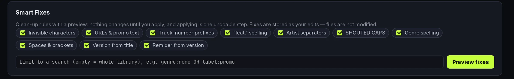
| Rule | Example |
|---|---|
| Invisible characters | zero-width spaces, odd Unicode |
| URLs & promo text | “Track (www.promo-site.com)” → “Track” |
| Track-number prefixes | “03 - Title” → “Title” |
| “feat.” spelling | ft / Feat / featuring → feat. |
| Artist separators | consistent “&” and “,” |
| SHOUTED CAPS | “DEEP INSIDE” → “Deep Inside” |
| Genre spelling | “Tech-House”, “techhouse” → “Tech House” |
| Spaces & brackets | doubled spaces, unbalanced brackets |
| Version from title | “Track (Extended Mix)” → title “Track”, version “Extended Mix” |
| Remixer from version | “Someone Remix” → remixer “Someone” |
Find & replace
Across the selected tracks and chosen fields, with match case, whole words, and regular expressions ($1… in the replacement). Shows every value that would change before applying.
Import metadata from CSV
From a spreadsheet or another tool's export: map each column to a field (or ignore it), match rows by file path, ISRC or artist + title, preview the summary (matched, not found, ambiguous, values that would change), apply. Empty cells never clear a value; a “Decision” column can set keep/pass/maybe.
Auto-tag online
The only feature that uses the internet on its own initiative — and only when you start it. It sends artist, title, version and duration of the selected tracks to the services you choose (MusicBrainz, Deezer, Apple Music/iTunes, Discogs with your personal token), in your priority order, slowly on purpose (MusicBrainz allows one request per second).
- Fields: album, label, genre, style/subgenre, year, ISRC, BPM (Deezer), cover art (written into files).
- A match needs the same artist, title and version (Extended, Radio Edit, remix) and a similar duration; an identical ISRC is always a match. Tracks without a confident match are listed.
- “Also replace values that are already set” is off by default.
- Review every proposed value; apply is one undoable step for metadata. Cover art is written with backups and verification.
Rename / move files
Build file names from metadata with a pattern such as {artist} - {title} ({version}). Tokens: {artist} {title} {version} {remixer} {album} {label} {genre} {year} {bpm} {key} {camelot}. Empty values and their brackets are left out; a version already in the title is not repeated; the extension is kept. Optionally move files to another folder. The preview shows each new name and skips conflicts (no metadata, missing file, already named so, two files getting the same name, a file already there, destination missing, path too long for Windows). Names are made valid on Windows, macOS and Linux (forbidden characters replaced, reserved names such as CON avoided, length limited). Existing files are never overwritten; moves to another drive copy, verify and only then remove the original; cues, tags and playlists stay attached; undo moves the files back.
Cover art
Add cover art… embeds a JPEG, PNG, GIF or BMP (up to 10 MB) as the front cover of the selected files, replacing existing front covers; Remove cover art… removes all embedded pictures. Only the picture tag changes, the audio is not re-encoded, and each file is verified.
Write tags to files
Your corrections live in the library until you choose to write them into the files' own tags, so that other software sees them. The preview lists, per file, every field that would change. Recommended: “Keep a copy of each original file before writing”. Tags are written to a temporary copy that is read back and verified, and only then replaces the original — a failed write leaves the original untouched. Files changed on disk since the last scan are skipped.
19. To your DJ software

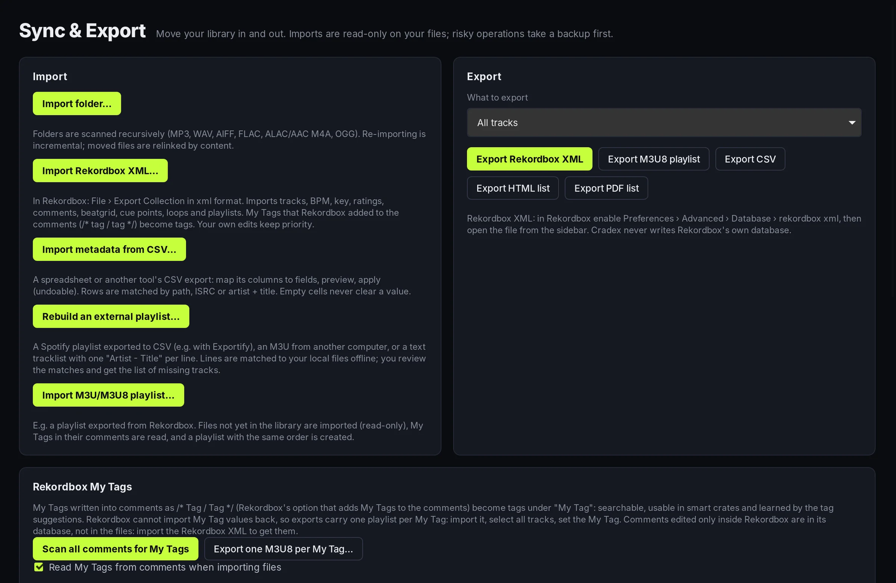
Sync & Export moves your library in and out. What to export chooses the whole library (every playlist and folder) or a selection or search as one playlist. Imports from other software take a backup of the Cradex library first. The other software's own database is never modified.
Each format is round-trip tested (export, re-import, compare field by field). Checks inside each DJ application and version are in progress: if a field does not arrive as expected, please report it.
Rekordbox
Export (Rekordbox XML): tracks, playlists and folders, BPM, key, rating, comments, cue points, loops and the beatgrid's first marker.
- Sync & Export › Export Rekordbox XML, save the file somewhere permanent.
- In Rekordbox: Preferences › Advanced › Database › rekordbox xml › Imported Library › choose the file. (Once; Rekordbox re-reads it.)
- Show the rekordbox xml node in the sidebar (Preferences › View › Layout), open it, right-click playlists › Import Playlist.
Import: Rekordbox › File › Export Collection in xml format, then Import Rekordbox XML…. My Tags in comments become tags. Your own Cradex edits keep priority over imported values.
Traktor
Exports an NML collection: tracks, playlists and folders, BPM, key, rating, comments, grid, hot cues, cues and loops. In Traktor: File › Import Another Collection, choose the NML. Import reads a collection.nml (Traktor's own file is never modified).
Serato
Writes crates (Subcrates/*.crate, folders included) into the _Serato_ folder on the drive that holds the music; tracks on other drives are skipped (Serato keeps one crate folder per drive). Serato reads BPM and key from the files' tags, so use Write tags to files for those tracks first. Cue points are not transferred to Serato.
VirtualDJ
Export writes playlists as .vdjfolder files into a folder you choose (for example VirtualDJ/Playlists). Import reads the VirtualDJ folder: database.xml and playlists (metadata, BPM, key, grid, hot cues). Smart Crate rules can be copied as VirtualDJ filters. VirtualDJ's database is never modified.
Engine DJ and djay
Engine DJ keeps its library in a proprietary database: export to Rekordbox XML and let Engine DJ import it. djay has no documented library format: use M3U8 playlists or Rekordbox XML where djay supports it.
Export field mapping
DJ software has no place for Cradex's tags, energy or notes. Export field mapping chooses what goes into the exported Comment, in order — original comment, tags (as /* tag / tag */, the My Tag convention), energy, Camelot key, notes, decision, rating — with a live preview such as warm-up /* Dark / Peak */ Energy 7 8A. Options: append the subgenre to the genre (“Techno / Hypnotic”), export set chapters as separate playlists, add a “My Tag” folder with one playlist per tag.
Rebuild an external playlist
A Spotify playlist exported to CSV (e.g. with Exportify), an Apple Music text export, an M3U from another computer, or a plain tracklist with one “Artist - Title” per line: each line is matched to your own files offline. Confident matches are pre-selected; lines marked “check” let you pick the right version; missing tracks can be copied to the clipboard as a shopping list. Then create the playlist.
M3U8, CSV, HTML and PDF
M3U8 playlists for any player; CSV with every field for spreadsheets; HTML and PDF track lists for printing or sharing a running order.
20. Watch folders
Settings › Watch folders › Add folder…: new and changed audio files in these folders are imported automatically (read-only), and analysed if automatic analysis is on. Renamed or moved files are relinked to their existing tracks; when a whole folder disappears or is renamed, all its files are marked missing and relinked when they reappear. Folders are re-scanned at start-up to catch changes made while Cradex was closed. A disconnected drive shows as “unavailable”. Problems (for example permission denied) appear as notifications and are kept in the library's log. Recipes with “on import” run on these tracks too — a good way to route downloads.
21. Safety, backups, privacy
Guarantees
- Audio files are only read, unless you choose one of the writing actions in chapter 18.
- Tag writes go to a verified copy that replaces the file only after a read-back check.
- File moves (rename, move, merge) are journalled: if something fails or the computer stops halfway, files are put back where the library says they are at the next start. A merge either completes for every file or changes nothing.
- Nothing is deleted: duplicates go to a trash folder you review; archived tracks can be restored.
- Every edit, decision, tag and fix is undoable; each track keeps its history.
- Before a new version upgrades the database, a copy of the old one is kept (
library.db.pre-vN.bak).
Backups
Settings › Backups lists snapshots of the library database (not of your audio files): a daily automatic backup (the last 10 are kept), one before every import from other DJ software, one before every restore, one before Start over, plus any you make with Back up now. Restore returns the library to that state — the current state is backed up first, so even a restore can be undone. Check database integrity runs SQLite's integrity check.

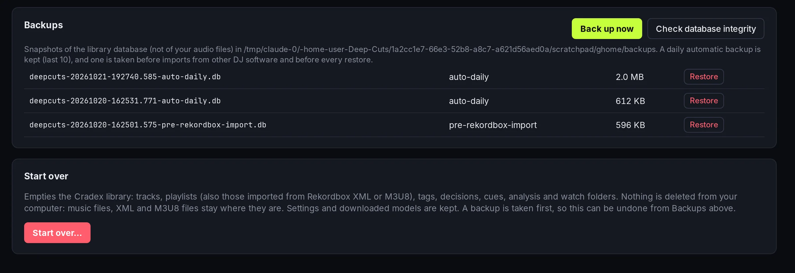
Start over
Settings › Start over empties the Cradex library: tracks, playlists (including those imported from Rekordbox XML or M3U8), tags, decisions, cues, analysis and watch folders. Nothing is deleted from your computer: music, XML and M3U8 files stay where they are. Settings and downloaded models are kept. A backup is taken first, so Settings › Backups can bring everything back.
Where your library lives
| Windows | %APPDATA%\Cradex |
|---|---|
| macOS | ~/Library/Application Support/Cradex |
| Linux | ~/.local/share/Cradex |
If you used the app when it was called Deep Cuts, your library stays in the old DeepCuts folder next to these and Cradex keeps using it: nothing is moved or copied.
Inside: library.db (the catalogue), backups/, models/ (downloaded AI models). Settings › About shows the exact path. To keep the library elsewhere (an external drive, a synced folder), set the environment variable CRADEX_HOME before starting the app. To move to a new computer: copy this folder, install Cradex, then use Relocate library if the music paths differ.
Privacy
No account, no telemetry, no analytics, no cloud. The core works fully offline. The network is used only when you start it: downloading an optional AI model (from the MTG server or the Cradex GitHub release), or Auto-tag online, which sends artist, title, version and duration of the selected tracks to the catalogues you choose. Search by description and every other AI feature run locally.
22. Settings reference

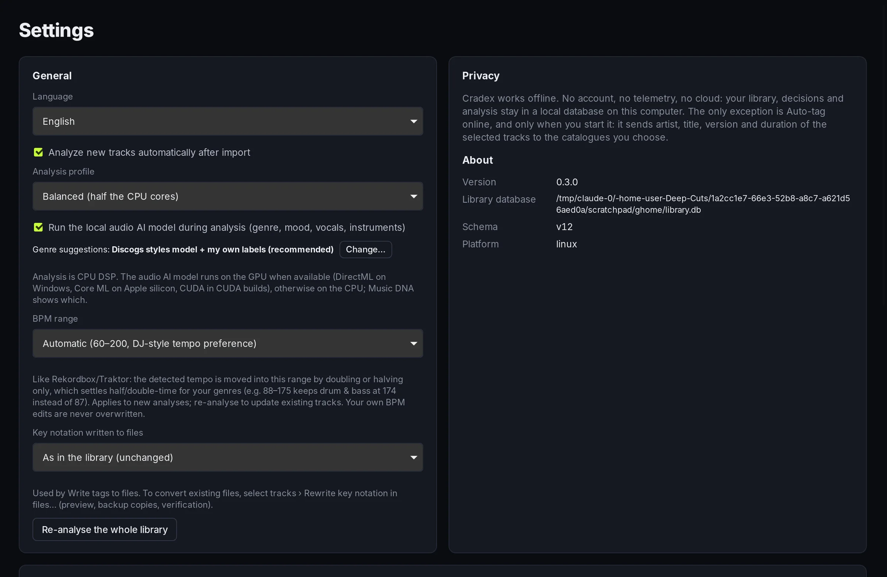
| Setting | Effect |
|---|---|
| Language | English or Italian. |
| Analyze new tracks automatically | Queue analysis after every import. |
| Analysis profile | Light (1 worker) · Balanced (half the cores) · Maximum (all cores but one). |
| Run the local audio AI model | PANNs during analysis (genre, mood, vocals, instruments, sound similarity). |
| Genre suggestions | Discogs styles + your labels · Discogs only · your labels only; Accurate styles (MAEST); remove MAEST. |
| BPM range | Automatic, or a range (60–120, 70–140, 78–155, 88–175, 98–195) that settles half/double time. |
| Key notation written to files | As in the library · Camelot · Open Key · musical. |
| Re-analyse the whole library | Queue every track again (after changing the BPM range, for example). |
| Watch folders | Folders imported automatically (chapter 20). |
| Relocate library | Change the start of stored paths after moving your music (chapter 17). |
| Backups | Back up now, restore, integrity check. |
| Start over | Empty the library after a backup; files untouched. |
| About | Version, library database path, schema version, platform, and the folder where backups are kept. |
Export options (field mapping, chapters, My Tag playlists) and My Tag import live in Sync & Export; auto-tag providers and the Discogs token in the Auto-tag dialog.
23. Troubleshooting & FAQ
macOS says the app is damaged or cannot be opened
It is the missing Apple signature, not a damaged file. Right-click › Open › Open, or run xattr -dr com.apple.quarantine "/Applications/Cradex.app". Compare the file with SHA256SUMS.txt if in doubt.
Windows blocks the installer
SmartScreen warns about unsigned installers: More info › Run anyway. Some antivirus products quarantine new unsigned apps; restore it from quarantine or add an exception.
No sound in the preview
Check the volume slider in the player and the system output device. On Linux, install the GStreamer plugins: sudo apt install gstreamer1.0-plugins-good gstreamer1.0-plugins-bad gstreamer1.0-libav (the .deb does this). Formats the system cannot play are decoded by Cradex (“decoded preview”), which takes a moment for long files.
Tracks show as missing
The file moved or the drive is disconnected. Reconnect the drive, or re-import the folder where the files are now (they are relinked by content), or use Settings › Relocate library if a whole collection moved.
BPM is half or double what I expect
Choose a BPM range that matches your genres (Settings) and re-analyse, or type the BPM: your value is kept from then on.
The key looks wrong
Look at Key correlation in the details: low values mean the tonality is ambiguous. If the analysis says 8A and your ears say 9A or 8B, those still mix well. Type the right key and it stays.
The AI suggestions or styles are missing
Check Settings › Run the local audio AI model and the genre source; re-analyse the tracks (Music DNA shows how many lack results). On Intel Macs the models are not available.
A model download fails
The server may be busy (Cradex retries a few times) or a firewall blocks it. Try later. A broken or altered download is never used: each file is checked against a fixed fingerprint.
Analysis is slow or the computer gets loud
Use the Light profile while you work and Maximum overnight. MAEST (accurate styles) and CLAP add several seconds per track: turn them off if you do not need them. Pause the queue at any time.
My edits did not reach Rekordbox / Serato
Exports carry your library values. Serato reads BPM and key from file tags: use Write tags to files. Rekordbox applies XML values to tracks you import from the rekordbox xml node; tracks already in its collection may keep Rekordbox's own values depending on its import settings.
Can I use Cradex with a library on an external drive?
Yes. Import from the drive; if it is disconnected, its tracks show as missing until it comes back. To keep the Cradex library itself on the drive, set CRADEX_HOME.
Is it really free? Can I use it for paid gigs?
Cradex is free software (GPL-3.0) with no paid tier. Use it for anything. Only the optional MTG models (Discogs styles, classifiers, MAEST) carry a non-commercial licence; if that matters to you, use “Only my own labels”.
Something else
Open an issue on GitHub with your system, the Cradex version (Settings › About) and the steps that lead to the problem.
24. Command line & building from source
The cradex command-line tool
Works on the same library as the app (close the app first for writes). Useful for scripts, servers and very large batches.
cradex --help
cradex import ~/Music/Promos
cradex search 'bpm:122-126 key:8A+ -decision:pass'
cradex analyze 'analyzed:no' --profile maximum
cradex decide keep 'label:kompakt'
cradex export-dj rekordbox ~/Exports/library.xml
cradex undoCommands include import, search, decide, analyze, tag, fix, write-tags, rename, import-dj, export-dj, match-playlist, import-m3u, mytags, undo, export, stats, and evaluation tools (eval, key-study, tempo-study, genre-eval, beat-eval, clap-eval) used to produce the published measurements. cradex <command> --help describes each.
Building from source
Requirements: Rust (stable) and Node.js 22; on Linux also libwebkit2gtk-4.1-dev librsvg2-dev.
git clone https://github.com/Nicodesy06/Deep-Cuts.git
cd Deep-Cuts
npm install
npm run dev # desktop app with hot reload
npm run build # installers in target/release/bundle
npm test # UI and Rust tests
cargo run -p dc-cli --release -- --helpBuild without the AI runtime (e.g. for Intel Macs) with --no-default-features; with NVIDIA CUDA support with --features gpu-cuda.
25. Glossary
| Camelot | A wheel notation for keys: numbers 1–12 around the circle of fifths, A for minor and B for major. Neighbours (±1) and the A/B partner mix harmonically. |
|---|---|
| Open Key | Traktor's equivalent notation (1m–12m, 1d–12d). |
| Energy boost | Key moves of +2 or +7 on the Camelot wheel that lift the energy while still sounding related. |
| Hot region | The start of the most energetic 30 seconds of a track, measured; previews start there. |
| Beatgrid | The tempo and first-beat position that place every beat and bar of a track. |
| Hot cue / memory cue | Instant-jump points on pads (A–H) / stored positions you navigate to. |
| LUFS | Loudness Units relative to Full Scale: perceived loudness over the whole track. |
| Crest factor | Peak level minus average level; low values indicate heavy limiting. |
| Transcode | A file re-encoded from a lower-quality source: a FLAC made from an MP3 has the MP3's missing highs. |
| Acoustic fingerprint | A compact summary of how a recording sounds, used to find the same recording in different files. |
| Accuracy1 / Accuracy2 | Tempo metrics: within 4 % of the reference / also counting half, double, third or triple tempo. |
| MIREX key score | A key accuracy that gives partial credit to close mistakes (fifth 0.5, relative 0.3, parallel 0.2). |
| Precision@10 | The share of the 10 best results that are right. |
| Provenance | Where a value came from: file, import, analysis or you. |
| Smart Crate | A saved search that updates itself. |
| Recipe | A saved search plus actions, optionally run on import. |